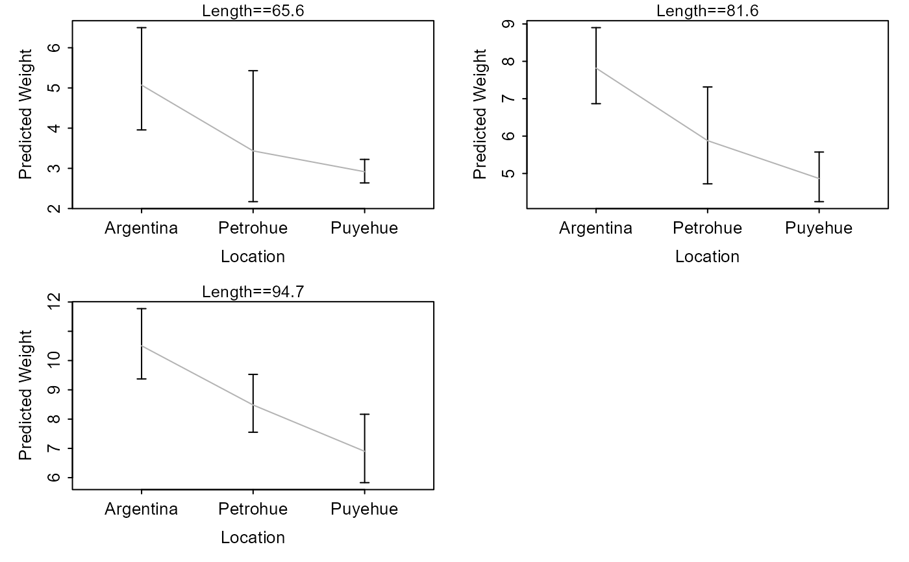
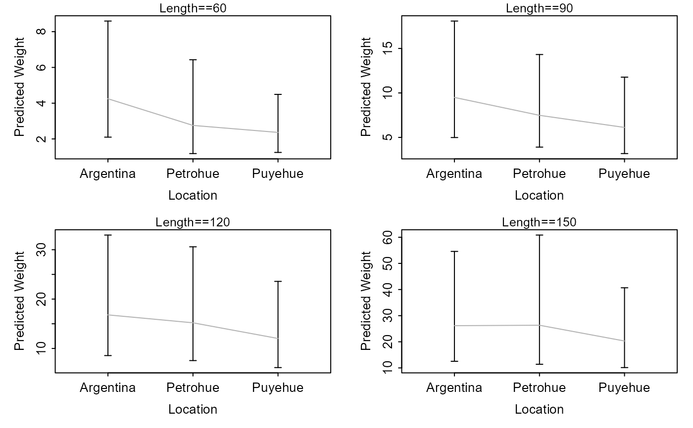

Constructs plots of predicted weights at given lengths among different groups.
Source:R/lwCompPreds.R
lwCompPreds.RdConstructs plots of predicted weights at given lengths among different groups. These plots allow the user to explore differences in predicted weights at a variety of lengths when the weight-length relationship is not the same across a variety of groups.
Usage
lwCompPreds(
object,
lens = NULL,
qlens = c(0.05, 0.25, 0.5, 0.75, 0.95),
qlens.dec = 1,
base = exp(1),
interval = c("confidence", "prediction", "both"),
center.value = 0,
lwd = 1,
connect.preds = TRUE,
show.preds = FALSE,
col.connect = "gray70",
ylim = NULL,
main.pre = "Length==",
cex.main = 0.8,
xlab = "Groups",
ylab = "Predicted Weight",
yaxs = "r",
rows = round(sqrt(num)),
cols = ceiling(sqrt(num))
)Arguments
- object
An
lmobject (i.e., returned from fitting a model withlm). This model should have log(weight) as the response and log(length) as the explanatory covariate and an explanatory factor variable that describes the different groups.- lens
A numeric vector that indicates the lengths at which the weights should be predicted.
- qlens
A numeric vector that indicates the quantiles of lengths at which weights should be predicted. This is ignored if
lensis non-null.- qlens.dec
A single numeric that identifies the decimal place that the lengths derived from
qlensshould be rounded to (Default is 1).- base
A single positive numeric value that indicates the base of the logarithm used in the
lmobject inobject. The default isexp(1), or the value e.- interval
A single string that indicates whether to plot confidence (
="confidence"), prediction (="prediction"), or both (="both") intervals.- center.value
A single numeric value that indicates the log length used if the log length data was centered when constructing
object.- lwd
A single numeric that indicates the line width to be used for the confidence and prediction interval lines (if not
interval="both") and the prediction connections line. Ifinterval="both"then the width of the prediction interval will be one less than this value so that the CI and PI appear different.- connect.preds
A logical that indicates whether the predicted values should be connected with a line across groups or not.
- show.preds
A logical that indicates whether the predicted values should be plotted with a point for each group or not.
- col.connect
A color to use for the line that connects the predicted values (if
connect.preds=TRUE).- ylim
A numeric vector of length two that indicates the limits of the y-axis to be used for each plot. If null then limits will be chosen for each graph individually.
- main.pre
A character string to be used as a prefix for the main title. See details.
- cex.main
A numeric value for the character expansion of the main title. See details.
- xlab
A single string for labeling the x-axis.
- ylab
A single string for labeling the y-axis.
- yaxs
A single string that indicates how the y-axis is formed. See
parfor more details.- rows
A single numeric that contains the number of rows to use on the graphic.
- cols
A single numeric that contains the number of columns to use on the graphic.
References
Ogle, D.H. 2016. Introductory Fisheries Analyses with R. Chapman & Hall/CRC, Boca Raton, FL.
Author
Derek H. Ogle, DerekOgle51@gmail.com
Examples
# add log length and weight data to ChinookArg data
ChinookArg$logtl <- log(ChinookArg$tl)
ChinookArg$logwt <- log(ChinookArg$w)
# fit model to assess equality of slopes
lm1 <- lm(logwt~logtl*loc,data=ChinookArg)
anova(lm1)
#> Analysis of Variance Table
#>
#> Response: logwt
#> Df Sum Sq Mean Sq F value Pr(>F)
#> logtl 1 92.083 92.083 898.4819 < 2.2e-16 ***
#> loc 2 2.634 1.317 12.8526 1.005e-05 ***
#> logtl:loc 2 0.101 0.051 0.4932 0.612
#> Residuals 106 10.864 0.102
#> ---
#> Signif. codes: 0 '***' 0.001 '**' 0.01 '*' 0.05 '.' 0.1 ' ' 1
# set graphing parameters so that the plots will look decent
op <- par(mar=c(3.5,3.5,1,1),mgp=c(1.8,0.4,0),tcl=-0.2)
# show predicted weights (w/ CI) at the default quantile lengths
lwCompPreds(lm1,xlab="Location")
# show predicted weights (w/ CI) at the quartile lengths
lwCompPreds(lm1,xlab="Location",qlens=c(0.25,0.5,0.75))

# show predicted weights (w/ CI) at certain lengths
lwCompPreds(lm1,xlab="Location",lens=c(60,90,120,150))
# show predicted weights (w/ just PI) at certain lengths
lwCompPreds(lm1,xlab="Location",lens=c(60,90,120,150),interval="prediction")

lwCompPreds(lm1,xlab="Location",lens=c(60,90,120,150),connect.preds=FALSE,show.preds=TRUE)
# fit model with a different base (plot should be the same as the first example)
ChinookArg$logtl <- log10(ChinookArg$tl)
ChinookArg$logwt <- log10(ChinookArg$w)
lm1 <- lm(logwt~logtl*loc,data=ChinookArg)
lwCompPreds(lm1,base=10,xlab="Location")
 ## return graphing parameters to original state
par(op)
## return graphing parameters to original state
par(op)